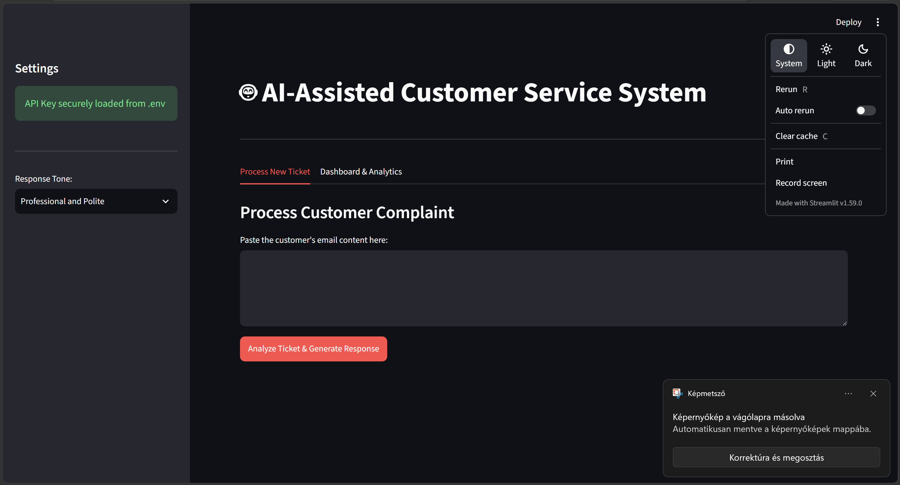
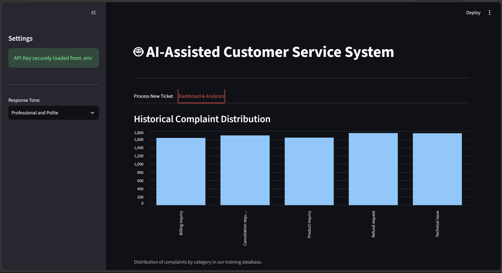

🤖 AI-Assisted Customer Service Assistant
An AI-powered first-line customer support assistant that automates ticket handling. It uses Machine Learning to instantly categorize incoming emails and Generative AI to draft context-aware, personalized responses. The interactive web interface allows support agents to review predictions, dynamically adjust response tones, and analyze historical ticket trends.
📸 Screenshots

Processing a customer complaint and generating a context-aware AI response.

Historical ticket distribution and analytics dashboard.
🛠️ Technologies Used
- Python: Core programming language.
- Streamlit: Interactive web interface and analytics dashboard.
- Scikit-Learn: Machine Learning classification (
LinearSVC) and text vectorization (TF-IDF).
- Google Gemini 2.5 API: Generative LLM for drafting tailored responses.
- Pandas & Joblib: Data manipulation and model serialization.
⚙️ How It Works
- Classification: A trained ML model reads the incoming ticket and classifies it into a predefined category.
- Response Generation: The predicted category and customer's text are passed to the Gemini API to craft a tailored reply.
- Control & Customization: Agents can use the UI to adjust the tone (e.g., Professional, Apologetic) before finalizing the email.
📁 Project Structure
app.py: Streamlit web interface and main application flow.ml_model.py: Text vectorization, model training, persistence, and prediction.helper.py: Google Gemini API connection and prompt engineering.
🚀 Quick Start
- Install Dependencies:
pip install -r requirements.txt
- Configure API Key:
Create a .env file in the root directory:
GEMINI_API_KEY=your_actual_gemini_api_key
- Launch the App:
python -m streamlit run app.py